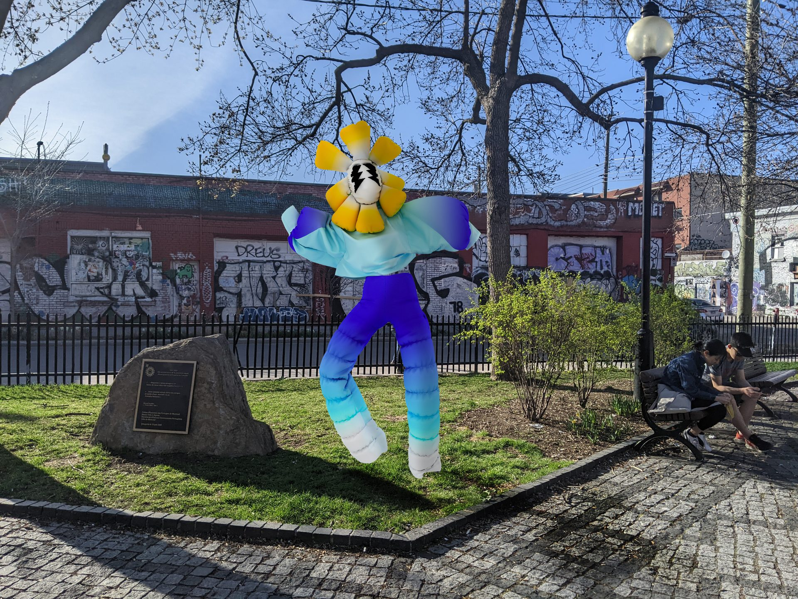
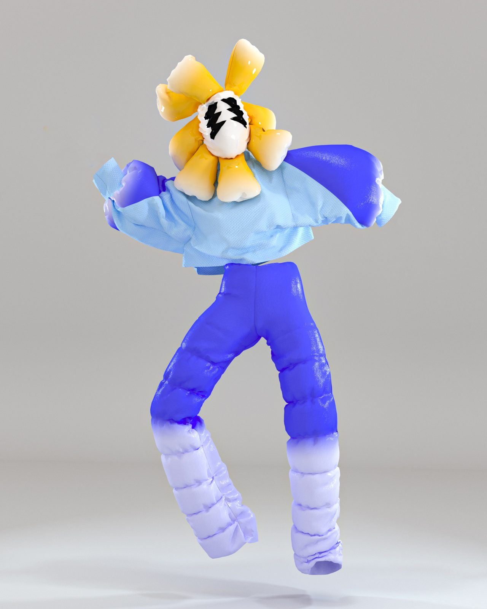
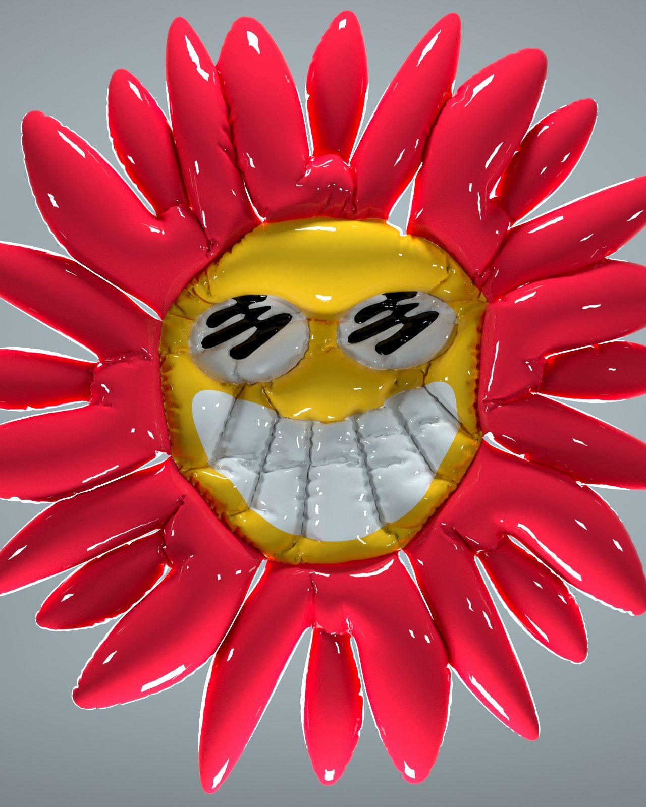
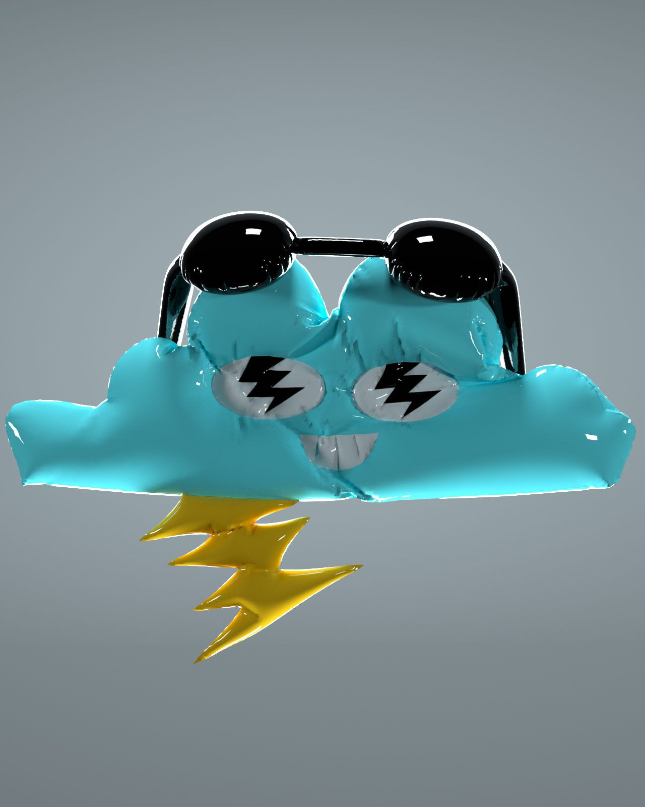
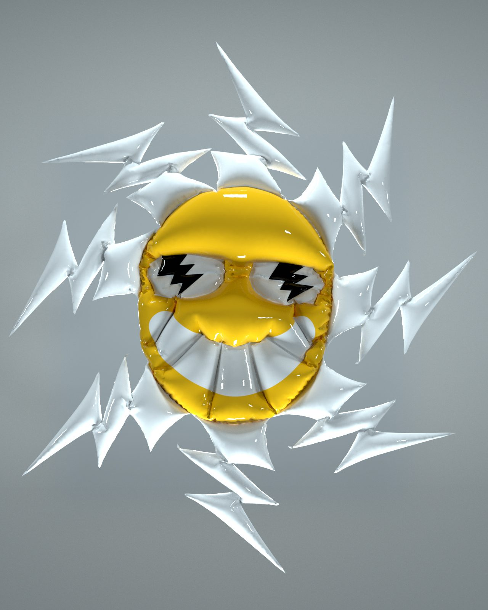

For MURAL Festival’s 10th edition, Samuel curated and produced a new set of augmented reality installations across Parc du Portugal and Parc des Amériques, bringing in 3D artists AlienDope and Melissalikesushi.
Building on the AR program he established in 2021, Samuel expanded the curatorial scope by inviting artists working in 3D modeling and character design to translate their work into site-specific AR sculptures. AlienDope contributed a family of rave-inspired characters (a flower girl, a cloud creature, and a sun) while Melissalikesushi brought a group of colorful characters placed throughout the parks.
Samuel handled the full production pipeline: curation, coordinating with each artist on their 3D models, optimizing geometry for mobile AR, managing placement and spatial anchoring, and integrating everything with the MURAL Festival app team. The work required translating desktop-quality 3D art into real-time mobile experiences without losing the artists’ visual identity.

A Montreal-based 3D artist and motion designer whose work draws from rave culture and surrealism. For MURAL 2022, AlienDope created three AR characters: a flower girl with sunflower-petal head and blue outfit, a cloud creature (Nuage) with sunglasses and lightning bolt, and a spiky sun character.
Samuel worked closely with AlienDope to optimize the high-poly models for mobile rendering: reducing geometry, baking textures, and testing placement across the park to ensure the characters read at life-size scale against the real landscape.




Translating desktop-quality 3D art into real-time mobile experiences without losing the artists’ visual identity.
Melissalikesushi (Melissa Mathieson) contributed a group of colorful, playful characters that were placed across the parks. Samuel coordinated the optimization of her 3D models for mobile AR, hours of work reducing polygon counts, re-baking textures, and testing scale and placement to ensure the characters felt grounded in the real park environment.
The 2021 and 2022 AR programs together established a new pillar for MURAL Festival: virtual public art embedded in real urban spaces. Across both editions, Samuel served as the bridge between artists, technology, and the festival, curating the work, producing the technical pipeline, and ensuring that augmented reality felt like a natural extension of MURAL’s mission to democratize urban art.